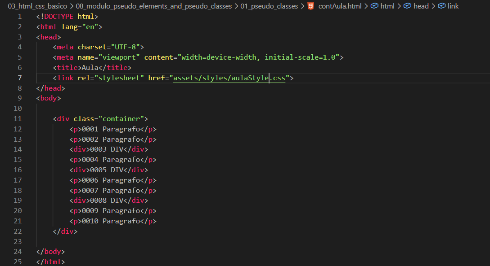
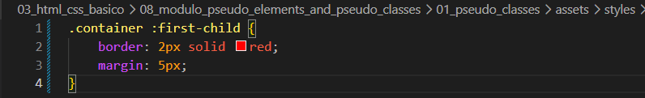
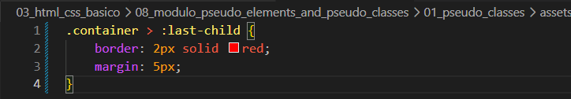
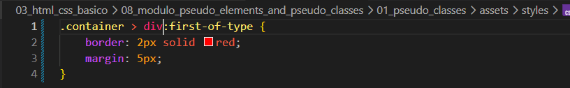
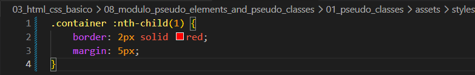

Pseudo-Classes
Intro
Aqui iremos aprender como estilizar elementos com base em seu estado ou posição.
Como exemplo, teremos o seguinte código:

Aqui iremos aprender como estilizar elementos com base em seu estado ou posição.
Como exemplo, teremos o seguinte código:

Se em nosso seletor usarmos como exemplo: .container :first-child, conseguimos selecionar o primeiro elemento dentro do nosso container.
Exemplo:

Usando o mesmo exemplo, ao utilizar :last-child iremos selecionar o último elemento dentro do container.
Caso exista um elemento dentro de outro, ambos podem ser considerados últimos, pois cada um será o último dentro do seu próprio nível.
Se quisermos selecionar apenas o último elemento de um nível específico, podemos usar .container > :last-child.
Exemplo:

Com essa pseudo-classe, selecionamos o primeiro elemento de um tipo específico, como p ou div.
Também podemos especificar, por exemplo, selecionar apenas a primeira div.
Exemplo:

.container .teste:first-of-type.
Obs: só irá funcionar se for realmente o primeiro daquele tipo.
Usado para selecionar elementos por posição. Precisamos informar um número, por exemplo:
.container :nth-child(3), que irá selecionar o terceiro elemento.
Também podemos usar expressões, como (5n + 2): (5 × 0 + 2 = 2 → segundo elemento), (5 × 1 + 2 = 7) e assim por diante.

Com :hover, quando passamos o mouse sobre um elemento, ele recebe um estilo diferente, criando um efeito de destaque.